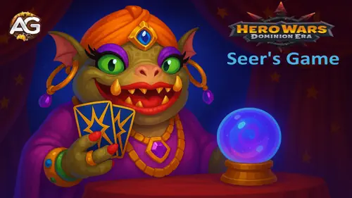
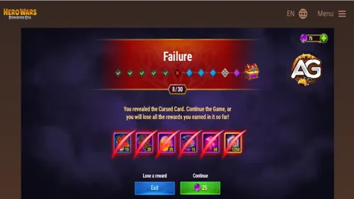

The Seer’s Game is one of the most exciting limited-time events in
Hero Wars: Dominion Era. It combines the thrill of chance with the rewards of
persistence, making it both a strategic and risky challenge for players.
Available from
team level 20, this event lasts three days and offers multiple quest chains,
a mini-game filled with suspense, and the opportunity to collect resources for hero and pet upgrades.

Seer’s Game Event - Hero Wars: Dominion Era, a game developed by Nexters.
Note: The information in this article is preliminary. Event details may change when released on live servers.
How to Access the Event
When the event becomes active, you will notice a special icon on the main screen.
By clicking this icon, you can directly enter the Seer’s Games interface.
Inside, you’ll find everything you need: the entrance to the mini-game, quest lists,
and the shop for special offers tied to the event.
Seer’s Coins – The Currency of the Event
To participate in the Seer’s Games, you’ll need Seer’s Coins.
These coins are the essential currency and can be obtained in two ways:
By completing event quests.
By purchasing bundles in the in-game shop.
Each attempt in the mini-game requires 25 Seer’s Coins.
The good news is that there’s no cap on how many times you can play —
as long as you have coins, you can keep testing your luck.
How the Mini-Game Works
Once inside the mini-game, you’ll face up to four cards.
Each card hides a different fate: three are lucky, and one is cursed.
Your task is to pick a card and reveal its outcome.
A lucky card grants you a reward and allows you to advance to the next round.
The challenge continues across 30 rounds, with rewards becoming
more valuable the further you progress.
Safe Rounds
To balance the risk, the game introduces safe rounds.
These rounds are marked with a gift icon and guarantee that all available
cards contain rewards. However, you cannot exit during a safe round.
You must pick a card and continue to a regular round before deciding
whether to leave with your winnings or press your luck.
The Cursed Card
The biggest danger in Seer’s Games is the cursed card.
If you pick it, the game ends immediately, and all collected rewards vanish.
At this point, you can choose to spend additional Seer’s Coins to retry
from the same round. The first retry is affordable, but the cost increases
with every subsequent attempt. Once the game ends, retry costs reset.
Event Rewards
Rewards are the heart of this event. Each round you clear increases the
value of your potential loot. Cards are color-coded by rarity:
Green: Basic rewards.
Blue: Improved resources.
Purple: Rare items.
Orange: High-value rewards.
Red: The most valuable prizes available.
The rewards accumulate with every successful round, and you can view them
beneath the cards as you progress. If you manage to complete all 30 rounds,
you will unlock the grand prize: the Seer’s Chest.
This chest allows you to choose your reward, giving players some control
over their final outcome.
What Happens to Unused Coins?
At the end of the event, any leftover Seer’s Coins are automatically converted
into Hero Resource Chests at a fixed rate:
25 coins = 2 chests. This ensures that no effort goes to waste,
even if you don’t spend every coin before the event timer runs out.
Event Quest Chains
Alongside the mini-game, Seer’s Games includes multiple quest chains.
These quests reward Seer’s Coins, resources, and sometimes rare items.
Quests typically involve completing everyday activities such as:
Event Quest Chains – Seer’s Games
The Seer’s Games event in Hero Wars: Dominion Era is supported by
several quest chains, each rewarding you with valuable resources. These quests can be
completed alongside your normal activities, and they provide additional Seer’s Coins,
items for progression, and unique rewards. Below you’ll find a detailed breakdown of
every quest line available during the event.
1 win — Reward varies by month: x1 New Skin or x20 Elemental Catalyst + x30 Primal Catalyst.
2 wins — 30 Titan Resource Chests.
3 wins — 30 Hero Resource Chests.
4 wins — 1 Legendary Gift of Dominion.
5 wins — 1 Gift of Dominion (red).
6 wins — 1 Elemental Spirit Summoning Sphere.
7 wins — 1 Elemental Spirit Summoning Sphere.
Slumbering Wealth
Complete quests from the Seer’s Game event chain:
5 quests — 25 Chaos Particles.
10 quests — 50 Chaos Particles.
15 quests — 75 Chaos Particles.
20 quests — 100 Chaos Particles.
25 quests — 150 Chaos Particles.
30 quests — 200 Chaos Particles.
35 quests — 250 Chaos Particles.
40 quests — 75 Golden Threads, 25 Seer’s Coins.
45 quests — 100 Golden Threads, 25 Seer’s Coins.
50 quests — 125 Golden Threads, 25 Seer’s Coins.
55 quests — 150 Golden Threads, 25 Seer’s Coins.
65 quests — 175 Golden Threads, 25 Seer’s Coins.
75 quests — 200 Golden Threads, 50 Seer’s Coins.
By combining quest rewards with strategic gameplay, you can maximize
your chances of progressing deeper into the mini-game.
Tips to Succeed in Seer’s Games
While luck plays a big role in this event, smart planning makes all the difference.
Here are some practical tips to increase your chances of walking away with
valuable rewards:
Save your Seer’s Coins: Avoid spending coins too early.
Wait until you’ve collected a decent amount so you can push further in one sitting.
Know when to quit: If you’ve collected a strong pool of rewards,
consider leaving rather than risking everything on the next card.
Budget for retries: Always keep a few extra coins ready
in case you draw a cursed card late in the game.
Track safe rounds: Use gift icon rounds to your advantage.
They guarantee progress and help you decide if continuing is worth the risk.
💡 Pro Tip: How to Save Your Progress When You Hit a Cursed Card
One of the toughest moments in the Seer’s Game happens when you flip the cursed card, especially if you are already deep into the rounds and don’t have enough Seer’s Coins to keep going. Normally, the game gives you two choices: “Continue” (if you have Coins available) or “Leave.” Choosing “Leave” will end your run and erase all the rewards you’ve collected so far — even if you were just a step away from the grand prize.
Fortunately, there’s a clever workaround that experienced players in Hero Wars: Dominion Era use to protect their progress. Instead of clicking “Leave,” you can exit the game without confirming and come back later to resume exactly where you stopped. Here’s how:

Bad Luck Seer’s Game, Hero Wars Dominion Era.
📱 Step-by-Step: Using the Home Button to Pause Your Run
When the cursed card appears and you’re out of Coins, do not press “Leave.”
Tap the “Home” icon in the top-right corner of the screen. This will take you back to the main menu without ending your run.
If you’re on mobile or browser, you can also close the app or the tab — just make sure you never confirm “Leave.”
Log back into Hero Wars: Dominion Era later, and you’ll start at the normal login screen.
Play event quests to earn more Seer’s Coins while your game progress stays intact.
Once you’ve collected enough Coins, reopen the Seer’s Game, and you’ll continue from the same round where the cursed card appeared.
This works because your progress only resets once you click “Leave.” By closing the game instead, the unfinished session is saved in memory, letting you return later without losing everything you’ve earned.
🚫 What Happens If You Click “Leave”
If you confirm “Leave,” your current run immediately ends. All collected rewards are lost, and you’ll have to restart from round 1. This can be a huge setback, especially near the end of the event when reaching the Seer’s Chest is within your grasp.
🎯 Why This Strategy Matters
Using this trick allows you to pause your run and continue later with fresh Coins, making it easier to reach the deeper rounds and claim the grand prize. It’s particularly helpful on the final day of the event when every Coin matters, and you can’t afford to waste progress.
Bottom line: Don’t let the cursed card ruin your game — pause, collect more Coins, and come back ready to push further!
Final Thoughts
The Seer’s Games event is a thrilling blend of risk and reward
that adds variety to Hero Wars: Dominion Era. With careful planning, smart
decision-making, and maybe a little luck, you can walk away with treasures
that accelerate your progress in the game.
Remember, the key lies in balancing greed with caution — sometimes leaving early
is wiser than chasing one more round.
Whether you’re aiming for the final Seer’s Chest or just looking to stock up
on resources, this event is one you won’t want to miss.
About the Author
Alexandre Domingos holds a postgraduate degree in Engineering and works as a Production Supervisor. In his spare time, he explores the gaming world as a YouTuber and blogger at Alexandre Games, combining his passion for technology and strategy. He has been immersed in gaming since the age of 5, starting on classic platforms like MSX, Master System, Nintendo, and even an old 286 PC. Since 2019, Alexandre has also been playing Hero Wars and Mobile Legends, among other mobile games, creating guides, tutorials, and analyses for the community.
Did you like our Seer's Game Event Tips for Hero Wars Web and Facebook? Is there something you didn't understand or would like to suggest changes to? We invite you to join our comment section on the Alexandre Games Blog page. Feel free to express your opinion, clarify your doubts, and share your suggestions. Click the button below to get started:


 Hero Wars: Dominion Era Tier List 2025 Best Heroes Ranked
Hero Wars: Dominion Era Tier List 2025 Best Heroes Ranked
 Complete Guide to Pet Adventure Maps for Hero Wars: Dominion Era
Complete Guide to Pet Adventure Maps for Hero Wars: Dominion Era


 How to Activate Promo Code Rewards in Hero Wars: Dominion Era 2025
How to Activate Promo Code Rewards in Hero Wars: Dominion Era 2025